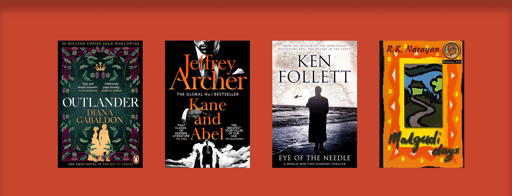
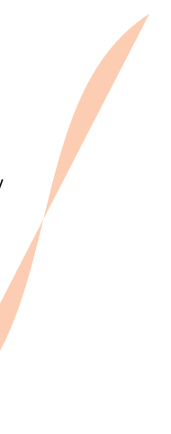
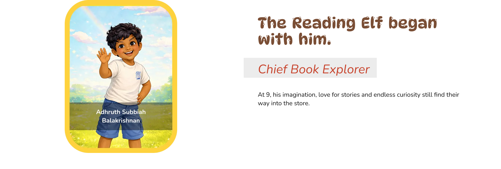
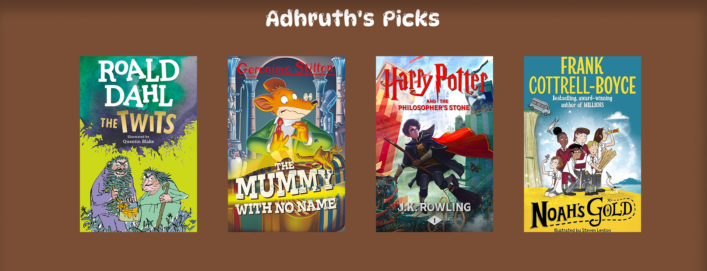
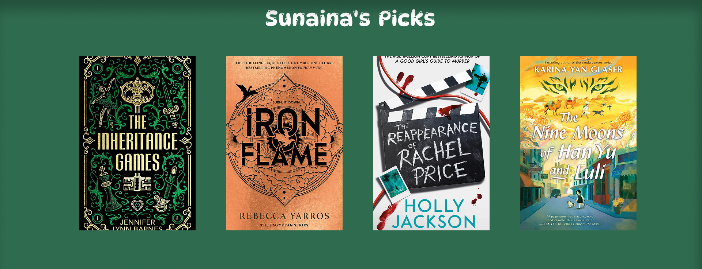

A little boy drew a bookstore.
His mother built it.




He drew the mushroom house that became our identity.
Today, he is still part of the store, helping kids discover books he loves and sharing his favourites with fellow young readers.
Look out for his picks around the store.✨


